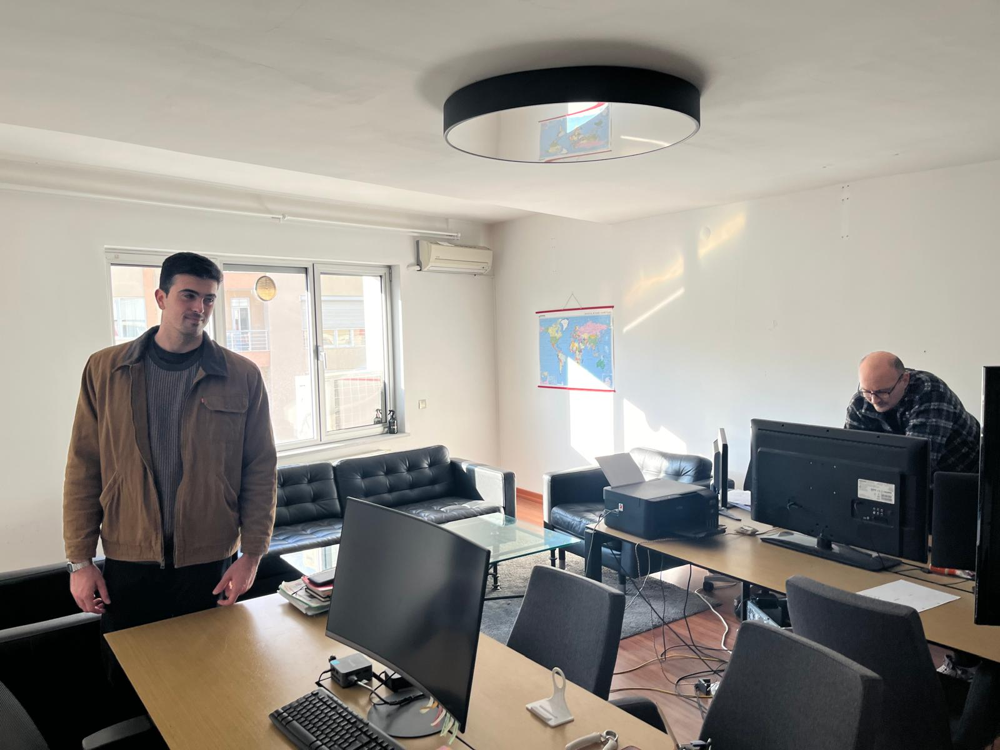

PYTHON · COMPUTER VISION · OPERATIONS
Geological Image Pipeline
A modular processing system that connected raw geological imagery to the workflows used by exploration teams.
DATA PIPELINES · SEGMENTATION · INVENTORY
Sales & Inventory Analytics
A structured analytics workflow used to improve data quality, surface customer patterns, and support inventory decisions.
BAYESIAN MODELING · CAUSAL INFERENCE · PUBLIC HEALTH
Breathing the Divide: COPD Prevalence & Air Pollution
A study of how chronic obstructive pulmonary disease varies across U.S. states, and whether elevated
PM2.5 exposure causes it. Built a Bayesian hierarchical model with partial pooling across regions,
then tested causality with an adjusted outcome regression.
6.05%Modeled national prevalence
48States, 2020 cross-section
p = 0.127Causal effect — not significant
Read the report, figures and full PDF →
REACT · NODE / EXPRESS · LOCAL-FIRST
Job Tracker (local)
A private job-application tracker that runs entirely on your own machine — no account, no
subscription, no data leaving your computer. Paste a job link and it fills in the company,
role, location and salary by reading each job board's own public data, so the common case
needs no API key and no AI at all.
6ATS platforms parsed directly, no AI
3Optional LLM backends, your own key
0Accounts or cloud services required
View on GitHub →